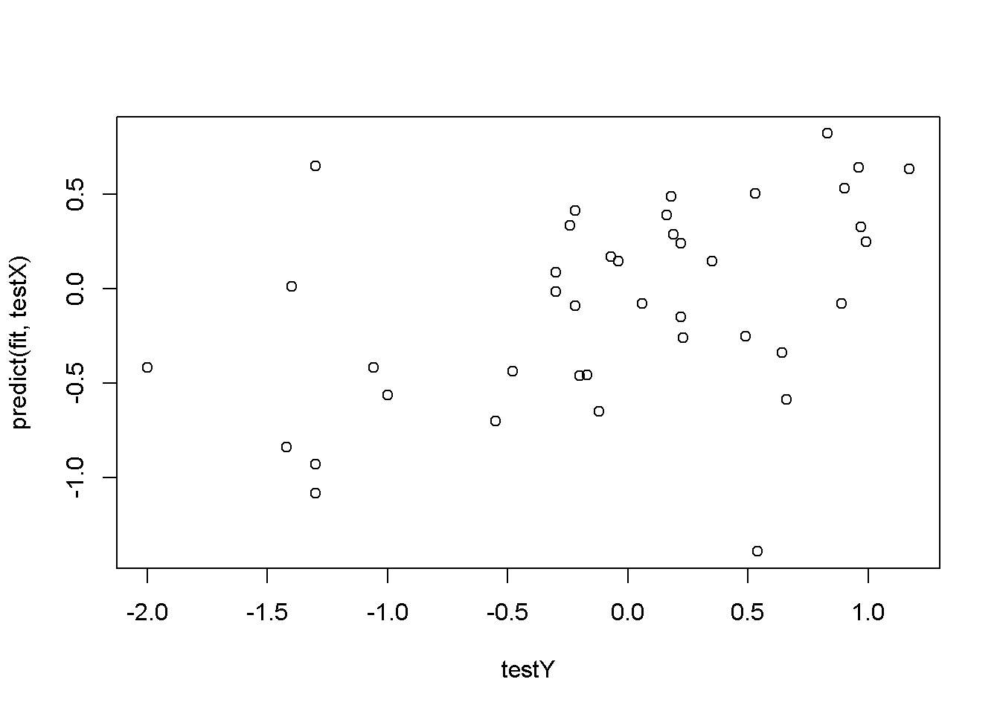
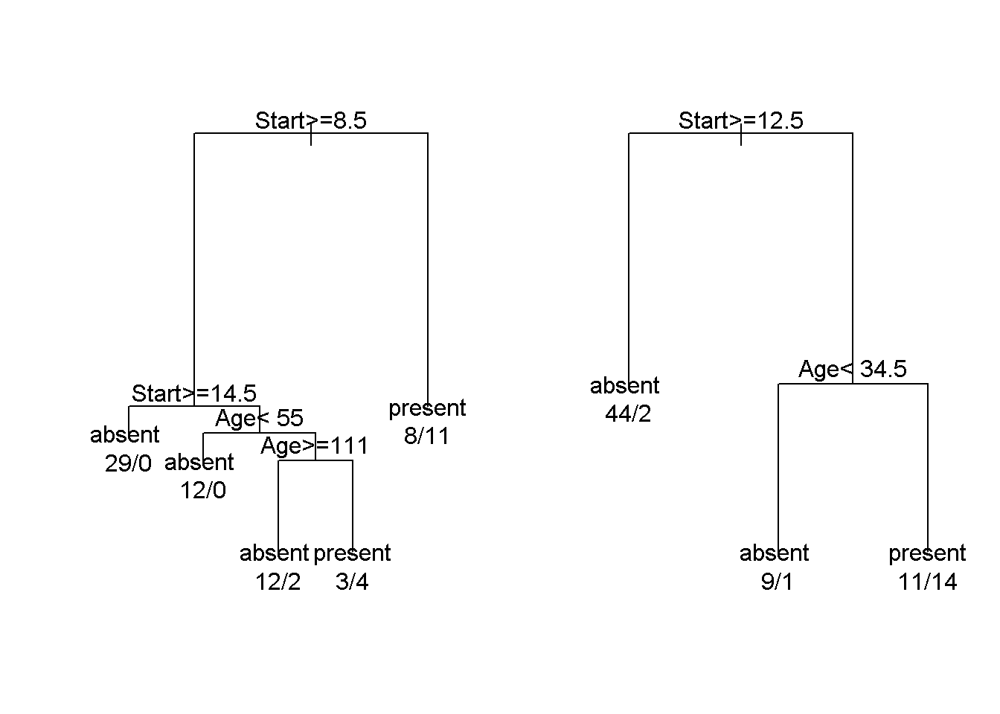
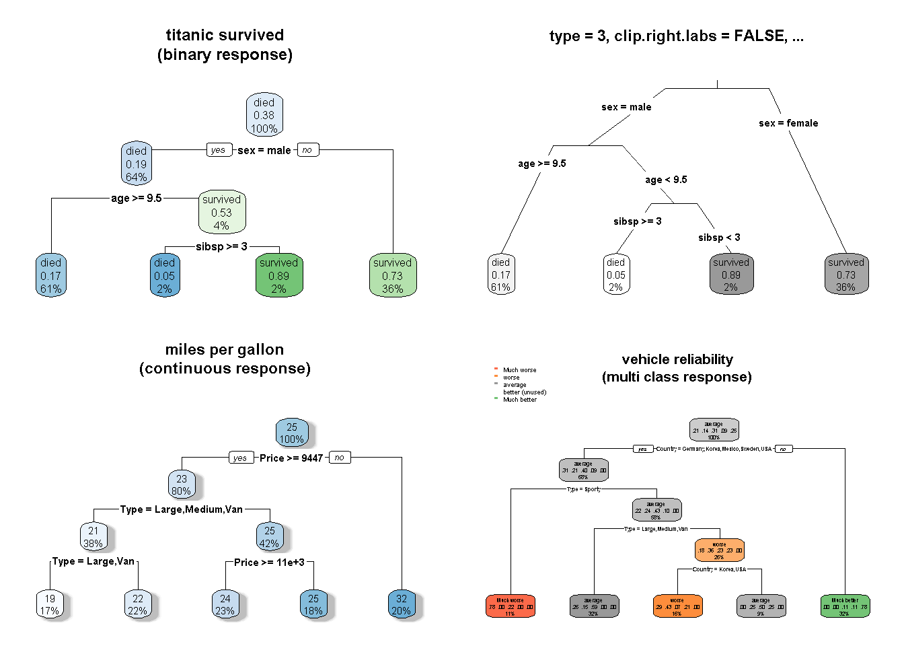

8 Data Science r packages
library(caret)
library(glmnet)
library(rpart)
library(rpart.plot)ls("package:caret")## [1] "anovaScores" "avNNet" "bag"
## [4] "bagControl" "bagEarth" "bagEarthStats"
## [7] "bagFDA" "best" "BoxCoxTrans"
## [10] "calibration" "caretFuncs" "caretGA"
## [13] "caretSA" "caretSBF" "caretTheme"
## [16] "cforestStats" "checkConditionalX" "checkInstall"
## [19] "checkResamples" "class2ind" "classDist"
## [22] "cluster" "compare_models" "confusionMatrix"
## [25] "confusionMatrix.train" "contr.dummy" "contr.ltfr"
## [28] "createDataPartition" "createFolds" "createModel"
## [31] "createMultiFolds" "createResample" "createTimeSlices"
## [34] "ctreeBag" "defaultSummary" "dotPlot"
## [37] "downSample" "dummyVars" "expandParameters"
## [40] "expoTrans" "extractPrediction" "extractProb"
## [43] "F_meas" "featurePlot" "filterVarImp"
## [46] "findCorrelation" "findLinearCombos" "flatTable"
## [49] "gafs" "gafs.default" "gafs_initial"
## [52] "gafs_lrSelection" "gafs_raMutation" "gafs_rwSelection"
## [55] "gafs_spCrossover" "gafs_tourSelection" "gafs_uCrossover"
## [58] "gafsControl" "gamFormula" "gamFuncs"
## [61] "gamScores" "getModelInfo" "getSamplingInfo"
## [64] "getTrainPerf" "ggplot.gafs" "ggplot.safs"
## [67] "groupKFold" "hasTerms" "icr"
## [70] "index2vec" "ipredStats" "knn3"
## [73] "knn3Train" "knnreg" "knnregTrain"
## [76] "ldaBag" "ldaFuncs" "ldaSBF"
## [79] "learning_curve_dat" "lift" "lmFuncs"
## [82] "lmSBF" "LPH07_1" "LPH07_2"
## [85] "lrFuncs" "MAE" "maxDissim"
## [88] "MeanSD" "minDiss" "mnLogLoss"
## [91] "modelCor" "modelLookup" "multiClassSummary"
## [94] "nbBag" "nbFuncs" "nbSBF"
## [97] "nearZeroVar" "negPredValue" "nnetBag"
## [100] "nullModel" "nzv" "oneSE"
## [103] "outcome_conversion" "panel.calibration" "panel.lift"
## [106] "panel.lift2" "panel.needle" "pcaNNet"
## [109] "pickSizeBest" "pickSizeTolerance" "pickVars"
## [112] "plot.gafs" "plot.rfe" "plot.safs"
## [115] "plot.train" "plotClassProbs" "plotObsVsPred"
## [118] "plsBag" "plsda" "posPredValue"
## [121] "postResample" "precision" "predict.bagEarth"
## [124] "predict.gafs" "predict.train" "predictionFunction"
## [127] "predictors" "preProcess" "print.train"
## [130] "probFunction" "progress" "prSummary"
## [133] "R2" "recall" "resampleHist"
## [136] "resamples" "resampleSummary" "resampleWrapper"
## [139] "rfe" "rfeControl" "rfeIter"
## [142] "rfFuncs" "rfGA" "rfSA"
## [145] "rfSBF" "rfStats" "RMSE"
## [148] "safs" "safs_initial" "safs_perturb"
## [151] "safs_prob" "safsControl" "sbf"
## [154] "sbfControl" "sbfIter" "sensitivity"
## [157] "SLC14_1" "SLC14_2" "sortImp"
## [160] "spatialSign" "specificity" "splsda"
## [163] "sumDiss" "summary.bagEarth" "svmBag"
## [166] "thresholder" "tolerance" "train"
## [169] "trainControl" "treebagFuncs" "treebagGA"
## [172] "treebagSA" "treebagSBF" "twoClassSim"
## [175] "twoClassSummary" "upSample" "var_seq"
## [178] "varImp" "well_numbered"ls("package:glmnet")## [1] "assess.glmnet" "bigGlm" "buildPredmat" "Cindex"
## [5] "coef.glmnet" "coef.relaxed" "confusion.glmnet" "coxgrad"
## [9] "coxnet.deviance" "cv.glmnet" "glmnet" "glmnet.control"
## [13] "glmnet.measures" "makeX" "na.replace" "na_sparse_fix"
## [17] "predict.glmnet" "predict.relaxed" "prepareX" "print.cv.glmnet"
## [21] "relax.glmnet" "rmult" "roc.glmnet" "stratifySurv"ls("package:rpart")## [1] "car.test.frame" "car90" "cu.summary" "kyphosis"
## [5] "meanvar" "na.rpart" "path.rpart" "plotcp"
## [9] "post" "printcp" "prune" "prune.rpart"
## [13] "rpart" "rpart.control" "rpart.exp" "rsq.rpart"
## [17] "snip.rpart" "solder" "solder.balance" "stagec"
## [21] "xpred.rpart"ls("package:rpart.plot")## [1] "prp" "ptitanic" "rpart.plot"
## [4] "rpart.predict" "rpart.rules" "show.prp.palettes"8.1 knn
data(BloodBrain)
inTrain <- createDataPartition(logBBB, p = .8)[[1]]
trainX <- bbbDescr[inTrain,]
trainY <- logBBB[inTrain]
testX <- bbbDescr[-inTrain,]
testY <- logBBB[-inTrain]
fit <- knnreg(trainX, trainY, k = 3)
fit## 3-nearest neighbor regression modelsummary(fit)## Length Class Mode
## learn 2 -none- list
## k 1 -none- numeric
## theDots 0 -none- listplot(testY, predict(fit, testX))
irisFit1 <- knn3(Species ~ ., iris)
irisFit1## 5-nearest neighbor model
## Training set outcome distribution:
##
## setosa versicolor virginica
## 50 50 50names(irisFit1)## [1] "learn" "k" "terms" "xlevels" "theDots"irisFit2 <- knn3(as.matrix(iris[, -5]), iris[,5])
irisFit2## 5-nearest neighbor model
## Training set outcome distribution:
##
## setosa versicolor virginica
## 50 50 50data(iris3)
train <- rbind(iris3[1:25,,1], iris3[1:25,,2], iris3[1:25,,3])
test <- rbind(iris3[26:50,,1], iris3[26:50,,2], iris3[26:50,,3])
cl <- factor(c(rep("s",25), rep("c",25), rep("v",25)))
knn3Train(train, test, cl, k = 5, prob = TRUE)## [1] "s" "s" "s" "s" "s" "s" "s" "s" "s" "s" "s" "s" "s" "s" "s" "s" "s" "s" "s"
## [20] "s" "s" "s" "s" "s" "s" "c" "c" "v" "c" "c" "c" "c" "c" "v" "c" "c" "c" "c"
## [39] "c" "c" "c" "c" "c" "c" "c" "c" "c" "c" "c" "c" "v" "c" "c" "v" "v" "v" "v"
## [58] "v" "c" "v" "v" "v" "v" "c" "v" "v" "v" "v" "v" "v" "v" "v" "v" "v" "v"
## attr(,"prob")
## c s v
## [1,] 0.0000000 1 0.0000000
## [2,] 0.0000000 1 0.0000000
## [3,] 0.0000000 1 0.0000000
## [4,] 0.0000000 1 0.0000000
## [5,] 0.0000000 1 0.0000000
## [6,] 0.0000000 1 0.0000000
## [7,] 0.0000000 1 0.0000000
## [8,] 0.0000000 1 0.0000000
## [9,] 0.0000000 1 0.0000000
## [10,] 0.0000000 1 0.0000000
## [11,] 0.0000000 1 0.0000000
## [12,] 0.0000000 1 0.0000000
## [13,] 0.0000000 1 0.0000000
## [14,] 0.0000000 1 0.0000000
## [15,] 0.0000000 1 0.0000000
## [16,] 0.0000000 1 0.0000000
## [17,] 0.0000000 1 0.0000000
## [18,] 0.0000000 1 0.0000000
## [19,] 0.0000000 1 0.0000000
## [20,] 0.0000000 1 0.0000000
## [21,] 0.0000000 1 0.0000000
## [22,] 0.0000000 1 0.0000000
## [23,] 0.0000000 1 0.0000000
## [24,] 0.0000000 1 0.0000000
## [25,] 0.0000000 1 0.0000000
## [26,] 1.0000000 0 0.0000000
## [27,] 1.0000000 0 0.0000000
## [28,] 0.4000000 0 0.6000000
## [29,] 1.0000000 0 0.0000000
## [30,] 1.0000000 0 0.0000000
## [31,] 1.0000000 0 0.0000000
## [32,] 1.0000000 0 0.0000000
## [33,] 1.0000000 0 0.0000000
## [34,] 0.4000000 0 0.6000000
## [35,] 0.8000000 0 0.2000000
## [36,] 1.0000000 0 0.0000000
## [37,] 1.0000000 0 0.0000000
## [38,] 1.0000000 0 0.0000000
## [39,] 1.0000000 0 0.0000000
## [40,] 1.0000000 0 0.0000000
## [41,] 1.0000000 0 0.0000000
## [42,] 1.0000000 0 0.0000000
## [43,] 1.0000000 0 0.0000000
## [44,] 1.0000000 0 0.0000000
## [45,] 1.0000000 0 0.0000000
## [46,] 1.0000000 0 0.0000000
## [47,] 1.0000000 0 0.0000000
## [48,] 1.0000000 0 0.0000000
## [49,] 1.0000000 0 0.0000000
## [50,] 1.0000000 0 0.0000000
## [51,] 0.0000000 0 1.0000000
## [52,] 0.8000000 0 0.2000000
## [53,] 0.6000000 0 0.4000000
## [54,] 0.0000000 0 1.0000000
## [55,] 0.0000000 0 1.0000000
## [56,] 0.0000000 0 1.0000000
## [57,] 0.0000000 0 1.0000000
## [58,] 0.0000000 0 1.0000000
## [59,] 0.6666667 0 0.3333333
## [60,] 0.2000000 0 0.8000000
## [61,] 0.0000000 0 1.0000000
## [62,] 0.0000000 0 1.0000000
## [63,] 0.0000000 0 1.0000000
## [64,] 0.6000000 0 0.4000000
## [65,] 0.0000000 0 1.0000000
## [66,] 0.0000000 0 1.0000000
## [67,] 0.0000000 0 1.0000000
## [68,] 0.0000000 0 1.0000000
## [69,] 0.0000000 0 1.0000000
## [70,] 0.0000000 0 1.0000000
## [71,] 0.0000000 0 1.0000000
## [72,] 0.2000000 0 0.8000000
## [73,] 0.0000000 0 1.0000000
## [74,] 0.0000000 0 1.0000000
## [75,] 0.2000000 0 0.80000008.2 rpart
fit <- rpart(Kyphosis ~ Age + Number + Start, data = kyphosis)
fit## n= 81
##
## node), split, n, loss, yval, (yprob)
## * denotes terminal node
##
## 1) root 81 17 absent (0.79012346 0.20987654)
## 2) Start>=8.5 62 6 absent (0.90322581 0.09677419)
## 4) Start>=14.5 29 0 absent (1.00000000 0.00000000) *
## 5) Start< 14.5 33 6 absent (0.81818182 0.18181818)
## 10) Age< 55 12 0 absent (1.00000000 0.00000000) *
## 11) Age>=55 21 6 absent (0.71428571 0.28571429)
## 22) Age>=111 14 2 absent (0.85714286 0.14285714) *
## 23) Age< 111 7 3 present (0.42857143 0.57142857) *
## 3) Start< 8.5 19 8 present (0.42105263 0.57894737) *fit2 <- rpart(Kyphosis ~ Age + Number + Start, data = kyphosis,
parms = list(prior = c(.65,.35), split = "information"))
fit2## n= 81
##
## node), split, n, loss, yval, (yprob)
## * denotes terminal node
##
## 1) root 81 28.350000 absent (0.65000000 0.35000000)
## 2) Start>=12.5 46 3.335294 absent (0.91563089 0.08436911) *
## 3) Start< 12.5 35 16.453120 present (0.39676840 0.60323160)
## 6) Age< 34.5 10 1.667647 absent (0.81616742 0.18383258) *
## 7) Age>=34.5 25 9.049219 present (0.27932897 0.72067103) *fit3 <- rpart(Kyphosis ~ Age + Number + Start, data = kyphosis,
control = rpart.control(cp = 0.05))
fit3## n= 81
##
## node), split, n, loss, yval, (yprob)
## * denotes terminal node
##
## 1) root 81 17 absent (0.79012346 0.20987654)
## 2) Start>=8.5 62 6 absent (0.90322581 0.09677419) *
## 3) Start< 8.5 19 8 present (0.42105263 0.57894737) *par(mfrow = c(1,2), xpd = NA) # otherwise on some devices the text is clipped
plot(fit)
text(fit, use.n = TRUE)
plot(fit2)
text(fit2, use.n = TRUE)
old.par <- par(mfrow=c(2,2)) # put 4 figures on one page
data(ptitanic)
#---------------------------------------------------------------------------
binary.model <- rpart(survived ~ ., data = ptitanic, cp = .02)
# cp = .02 for small demo tree
rpart.plot(binary.model,
main = "titanic survived\n(binary response)")
rpart.plot(binary.model, type = 3, clip.right.labs = FALSE,
branch = .4,
box.palette = "Grays", # override default GnBu palette
main = "type = 3, clip.right.labs = FALSE, ...\n")
#---------------------------------------------------------------------------
anova.model <- rpart(Mileage ~ ., data = cu.summary)
rpart.plot(anova.model,
shadow.col = "gray", # add shadows just for kicks
main = "miles per gallon\n(continuous response)\n")
#---------------------------------------------------------------------------
multi.class.model <- rpart(Reliability ~ ., data = cu.summary)
rpart.plot(multi.class.model,
main = "vehicle reliability\n(multi class response)")
par(old.par)